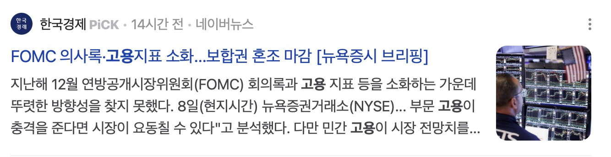

드림주스 주식스터디 · 5강
경제뉴스와 지표 보는 눈 기르기
경제전공 X, 전문가 X, 개인 투자자 + 실전 경험
→ 지식 전달이 아니라 경제 뉴스와 지표를 보는 관점(3가지)에 대한 이야기 임.
관점 1
경제 뉴스에 대한 착각
경제 뉴스에 대한 착각
주식은 과장.왜곡 다수, 부동산은 뒷북
뉴스에 휘둘리지 말고, 기사를 잘 활용하자
"어디서 나왔는가"
"누가 썼는가"
"왜 이 시점인가"
를 항상 의심할 것
예) '○○ 주식 지금 사야 한다'는 기사가 왜 이 시점에 나왔는지 확인하기
관점 2
뉴스에 나오는 지표들


“금리인하 속도조절”
“미 국채금리 4.7% 돌파에 시장 흔들”
“고용지표”
뉴스에 나오는 경제지표로
미 증시가 오르락 내리락 한다.
경제지표를 볼 줄 모르면
- 기자가 쓴 지표와 의견에만 의존하게 된다.
- 이슈화에 필요한 단편적인 지표만 기사화 → 경제 상황에 대한 과장 & 왜곡 발생
- 기사를 써줄 때 까지 원하는 지표를 적시 적절하게 확인할 수 없다.(수세적 입장이 될 수 밖에)
따라서, 필요한 경제지표와 경제 흐름을 이해하는
나만의 관점이 필요하다.
관심갖아야 할 지표 ①
경제확장
| 지표명 | 설명 | 발표주체 / 참고 |
|---|---|---|
| GDP | 국내총생산 (경제성장률) | 美 BEA / 한국은행 |
| 기업 실적 (EPS) | 기업당 순이익, 실적시즌 참고 | 기업 IR / 금융플랫폼 |
| 주택착공건수 | 건설경기 선행지표 | 美 상무부 |
| 소매판매 (Retail Sales) | 소비자 지출 규모, 민간소비 파악 | 美 상무부 |
| PMI (구매관리자지수) | 제조업·서비스업 경기전망 | ISM / 한국은 제조업지수 |
| 내구재 주문 | 소비자·기업의 설비투자 지표 | 美 상무부 |
| 산업생산지수 | 산업 전반의 생산활동 강도 | 美 연준 / 한국 통계청 |
| 설비투자 | 기업들의 투자 흐름 | 한국 통계청 / KDI |
관심갖아야 할 지표 ②
경제위축
| 지표명 | 설명 | 발표주체 / 참고 |
|---|---|---|
| 실업률 | 경제활동인구 중 실업자 비율 | 美 BLS / 한국 통계청 |
| 비농업 고용자수 (NFP) | 美 고용지표 핵심, 매달 첫 금요일 발표 | 美 BLS |
| 실업수당 청구건수 | 경기 둔화 여부를 가장 빠르게 반영 | 美 노동부 (주간발표) |
| 노동참여율 | 경제활동 인구 비중 | 美 BLS |
| 임금상승률 | 임금 증가율, 인플레 영향도 있음 | 美 BLS |
| 소비자심리지수 (Consumer Confidence) | 소비자들의 경제에 대한 기대감 | Conference Board / 통계청 |
| ISM 고용지수 | 고용전망 선행지표 | ISM |
| 퇴직률, 채용률 (JOLTS) | 채용공고, 이직 등 노동시장 흐름 | 美 BLS |
관심갖아야 할 지표 ③
통화정책 및 유동성
| 지표명 | 설명 | 발표주체 / 참고 |
|---|---|---|
| 기준금리 (FFR 등) | 중앙은행이 조정하는 금리 수준 | 美 연준 / 한국은행 |
| 통화량 (M2) | 시중에 풀린 광의 통화 | 한국은행 / 美 연준 |
| 통화유통속도 (Velocity of Money) | 돈이 얼마나 빠르게 순환하는지 | 美 연준 (FRED) |
| 달러인덱스 (DXY) | 주요 6개국 통화 대비 달러가치 | ICE / 환율 플랫폼 |
| 유동성지표 (Bank Reserves) | 초과지준, 예금기관 유동성 | 美 연준 |
| 재할인율 / 기준금리변화 전망 | 정책금리 방향성 참고 | CME FedWatch 등 |
| 장단기 금리차 (Yield Curve) | 장기금리 - 단기금리 차이 / 경기 침체 신호 | 美 재무부 |
| 국채금리 (10년물 등) | 시장금리 지표 / 물가·성장 기대 반영 | 美 재무부 / 채권시장 |
관심갖아야 할 지표 ④
물가지수
| 지표명 | 한글명 | 설명 | 투자 관점에서의 중요성 | 발표기관 |
|---|---|---|---|---|
| CPI | 소비자물가지수 | 소비자가 실제로 체감하는 생활물가 수준 주거비, 식료품, 교통비 등 포함 | 인플레이션의 대표 지표 금리 인상/인하 결정에 큰 영향 | 美 노동부 (매월) |
| Core CPI | 근원 소비자물가지수 | CPI에서 변동성이 큰 식료품, 에너지 제외 더 안정적인 물가 추세 판단 가능 | 연준의 정책 판단에 중요한 참고자료 | 美 노동부 |
| PCE | 개인소비지출지수 | 미국 소비자가 지출한 항목을 기반으로 측정 소비 패턴 변화를 반영 (동적 가중치) | 연준(Fed)이 가장 중요하게 보는 지표 | 美 상무부 (BEA) |
| Core PCE | 근원 개인소비지출지수 | PCE에서 식료품·에너지 제외 정책적 신뢰도 매우 높음 | 연준 목표 인플레이션 2% 기준 지표 | 美 상무부 |
| PPI | 생산자물가지수 | 생산자가 받는 상품·서비스 가격의 변동 원가 상승 → 소비자 물가 전이 가능성 | 선행 물가지표, 기업 실적 영향도 | 美 노동부 |
| Import / Export Price Index | 수입/수출물가지수 | 수입품/수출품의 가격 변동 특히 원자재·에너지 수입국에 민감 | 원화 약세 시 수입물가 상승 → CPI 자극 | 美 노동부 |
| 유가, 곡물, 원자재 가격 | - | 국제 원자재 시세 (WTI, 옥수수 등) 특정 부문 물가 급등 원인 분석에 도움 | 시장 변동성 유발 가능성 큼, 에너지·식품 관련 투자 참고 | 시장 (시세 실시간) |
경제 지표 확인하는 방법
관점 3
인과관계의 중요성
인과관계를 잘 알아야 경제 기사에 흔들리지 않는다.
✗ 잘못된 연결
원인과 결과가 상호 연관이 없는 잘못된 연결
✗ 순서의 오류
원인과 결과의 순서의 오류
✗ 끼워 맞추기
결과에 원인을 끼워 맞추기
금리와 경제의 인과관계?
금리 인하기에 경기침체? VS 경기침체로 금리인하?
"금리인하기에는 채권 투자라더니"…美 장기채 ETF 마이너스 - 머니투데이 ↗금리인하기 대표 투자처로 꼽히는 미국 장기채 ETF가 수익률 마이너스 행진을 이어가고 있다. 미국 경제가 나홀로 호조를 보이면서 장기 금리가 오히려 급등한 탓이다. [Asset] 긴축시계 멈췄다... 금리 인하기 "주식·채권 바벨 들어라" - 머니S ↗달라진 통화정책과 금융정책, 규제 변화에 대비하고 위험자산과 안전자산 포트폴리오를 리밸런싱해야 한다.장, 단기 금리차

이런 것을 이해하라.
1. 금리 인하(원인)가 경기침체(결과)를 부르는 경우
- 장기 저금리로 인한 자산 버블 → 버블 붕괴시 경기침체
- 저금리에도 경제 활성화 실패 → 경기 침체
- 금융기관 수익성 악화 → 경제 부담(자금흐름 둔화, 기업 투자 제한, 가계 소비 위축)
2. 경기침체(원인)로 금리를 내리(결과)는 경우
- 경기침체 → 금리 인하로 경제 부양 목적
- 실업률 상승, 기업 활동 둔화시 금리를 낮춰 경기 부양
경기흐름 파악하기
21년
인플레이션
(경기확장 국면)
22년
금리 인상
(경기 긴축)
23년~현재
금리 인하
(인플레이션 하락, 경기 긴축 완화)
29~30년
경기 침체국면 예상 : 저금리, 자금은 주식 → 채권
- 트럼프 금리인하 압박, 유동성 공급, 기업 친화
- 주식 상승 지속 예상, 최근에는 고점 이슈
- 채권 시장보다 주식시장 좋음.
관점 4
시간의 차이
경제기사는 ‘단기 흐름’을 다룰 수밖에 없다
- 뉴스는 하루 단위 또는 주·월 단위의 단기 이슈에 집중될 수밖에 없다.
- 주가는 시시각각 변하고, 경제지표도 수시로 발표되므로, 단기적 해석과 설명 위주의 보도가 많다.
- 이런 뉴스는 실제 시장의 본질이나 장기 흐름과는 다를 수 있음을 인지해야 한다
이것을 인정하라
경제 뉴스는 단기 흐름을 전할 뿐이다.
그것이 진짜 방향성은 아닐 수 있다.
- 뉴스는 참고자료일 뿐, 투자와 의사결정은 장기적 시야로 해야 한다.
- 정보를 소비하는 태도가 중요하다:
“이 뉴스가 오늘 말하는 것 이상을 함축할 수 있는가?”
“나의 투자 방향성과 상충하는가? 아니면 일시적 노이즈인가?”
같은 시간이지만 사람마다 기간의 길이가 다르다.
당분간 떨어질거라 예측해서 안산다.
당분간 오를거라 예측해서 산다.
누가 맞고 누가 틀리다 할 수 없다. 투자 성향이 다른것일 뿐
장기적인 흐름의 기준으로 기사를 봐야한다.
장기 투자하는 사람은 당일의 단편적인 기사는 소음일 뿐.
긴 시간의 변화를 예측하려고 노력한다.
부동산 투자 여담
제가 주간 부동산 시황을 보는 이유는 시장 변화를 감지하기 위한 것.
있는 그대로 믿으려는 것 아님.
아파트 가격이 전 지역이 동시에 변하지 않고,
한 지역의 모든 아파트가 동시에 변하지 않음.
흐름은 여러것이 모여 데이터로 나옴.
오르는 것, 멈춘 것, 떨어지는 것 → 이 것들이 합쳐서 데이터로 나옴. 그리고 뉴스 기사로 나옴.
어떤 기업의 호재 → 뉴스에 나오면 이미 다 안다. 가격에 이미 반영 되어있음.
기사에서 이야기 하는 내용의 인과관계, 시간의 차이를 알고 읽자.
흐름을 정리해 준 기사만 본다.
차라리 안보고 내가 지표를 보자.
그 동안 즐거웠습니다.
건강한 주식투자 시작 성공? 두려움 타파 했나요?
리치군인클래스 후기 + 카페 후기 부탁해요.
후기 쓰시면 돈 더 잘 벌겁니다.